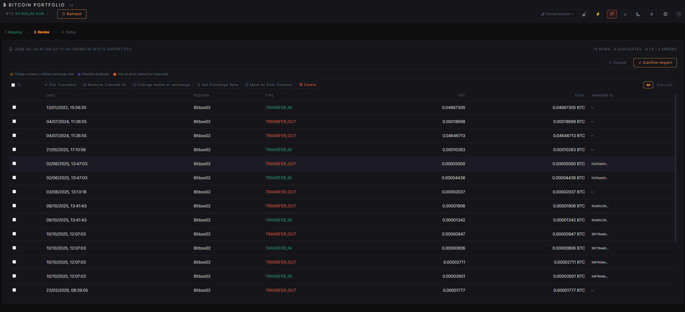
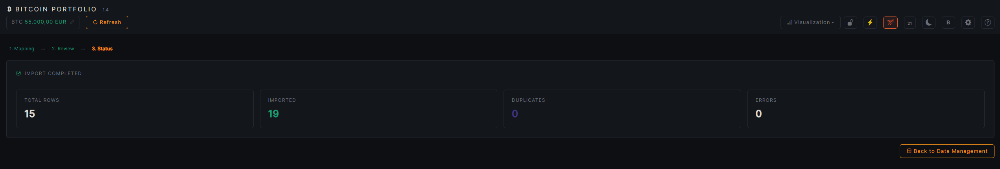
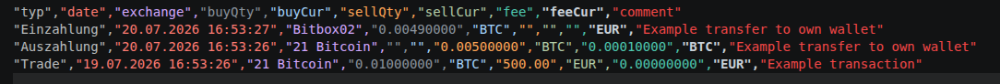
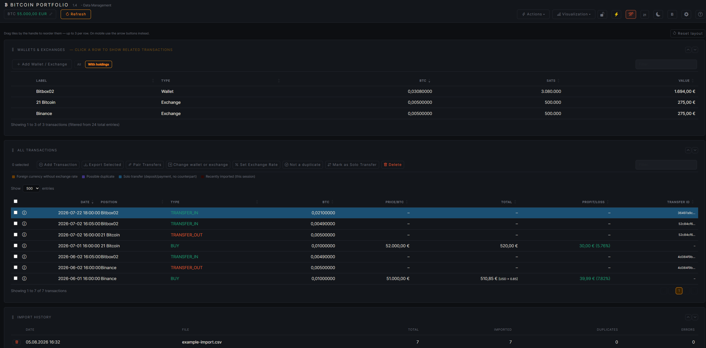
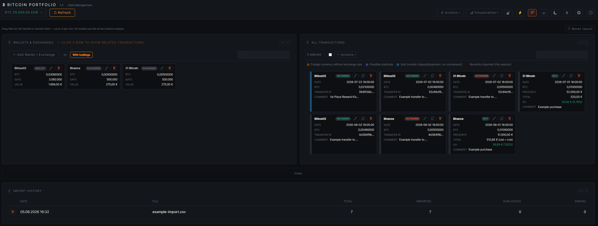
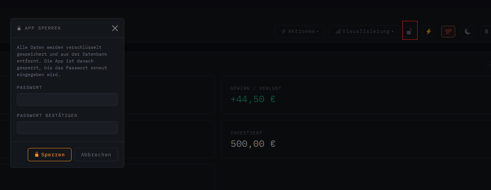
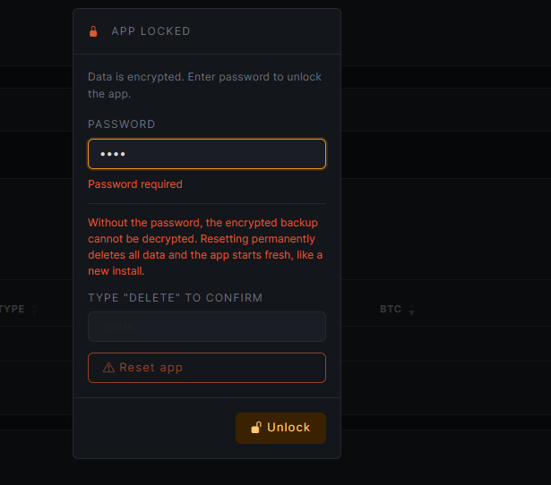
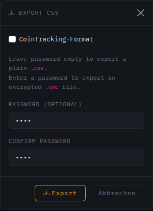
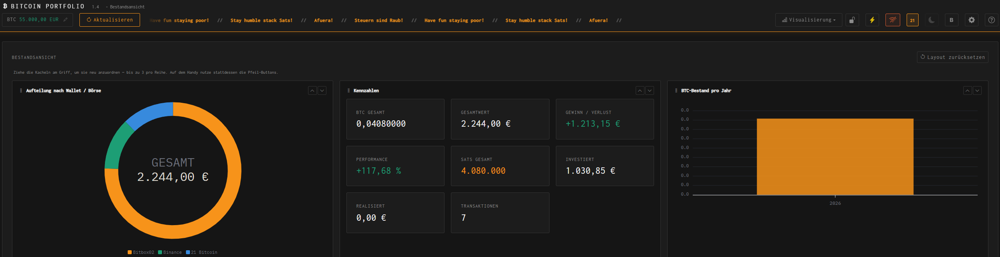

Import CSV
Select a file via “Import CSV”. The import runs as a wizard with three steps: Mapping, Review, and Status.
1. Mapping
The app detects the columns automatically and suggests a mapping — e.g. for CoinTracking exports, wallet export formats, or your own files with different column names. A live preview shows immediately how the detected rows will be interpreted.
- Required fields (marked with *): Type, Date, Wallets & Exchanges, Buy Amount, Buy Currency, Sell Amount, Sell Currency must each be mapped to a CSV column.
- Fixed Wallet / Exchange: overrides the column mapping and sets the same position for all rows — useful for files that only cover a single exchange. If no exchange is mapped, the area is highlighted.
- Type value mapping: every raw value that occurs in the file (e.g. Withdrawal, Staking) is mapped to a specific internal type — or set to – ignore – to skip those rows during import.

2. Review
Every detected row is checked individually before the actual import. Color-coded rows indicate where a review makes sense — e.g. possible duplicates or invalid values. Multi-select lets you confirm, fix, or exclude rows from this import in bulk.

3. Status
Summary of the import: how many rows were imported, skipped, or detected as duplicates. From here you go back to Data Management, where the imported transactions are immediately visible.

Custom CSV Format
Without the CoinTracking option, the app exports in its own format. This is also the format a manual CSV import expects without CoinTracking auto-mapping.
"typ","date","exchange","buyQty","buyCur","sellQty","sellCur","fee","feeCur","comment" "Deposit","20.07.2026 16:53:27","Bitbox02","0.00490000","BTC","","","","EUR","Example transfer to own wallet" "Withdrawal","20.07.2026 16:53:26","21 Bitcoin","","","0.00500000","BTC","0.00010000","BTC","Example transfer to own wallet" "Trade","19.07.2026 16:53:26","21 Bitcoin","0.01000000","BTC","500.00","EUR","0.00000000","EUR","Example transaction"
Important: typ controls the booking type (Deposit / Withdrawal / Trade), buyQty/buyCur and sellQty/sellCur each describe what was bought and sold respectively.

Data Management
Positions and transactions are managed on the “Data Management” page. Tiles can be reordered by drag handle and collapsed/expanded — the order is saved.
Wallets & Exchanges
Table of all positions. Use “Add Wallet / Exchange” to create a new position — every exchange/wallet must be created once before the first booking. Clicking a row filters the transaction list to that position; a filter hides positions with no holdings.
All Transactions
Complete list of all bookings. “Add Transaction” opens a form for a single booking:
| Field | Meaning |
|---|---|
| Quantity (BTC) | Traded BTC amount, e.g. 0.1 |
| Date & Time | Time of the transaction |
| Type | BUY or SELL |
| Fiat Amount | Value in the trading currency, e.g. 5000 |
| Currency | Trading currency, e.g. EUR or USDT |
| Exchange rate to display currency | Only relevant if trading and display currency differ |
| Exchange | Choose an existing position or create a new one via + New position… |
| Fees / Currency (fees) | Trading fee including its own currency |

Select one or more rows via checkbox to open the action menu:
| Action | Meaning |
|---|---|
| Export Selected | Export only the checked rows as CSV |
| Pair Transfers | Link two rows (deposit/withdrawal) as a matching wallet transfer |
| Change wallet or exchange | Move the position after the fact |
| Set Exchange Rate | Correct the rate to the display currency |
| Not a duplicate | Confirm a row detected as a duplicate and remove the marker |
| Mark as Solo Transfer | Deliberately flag a deposit/withdrawal that has no matching counter-booking |
| Delete | Remove the selected transactions |
Color-Coded Rows
The background color of a row in the transaction list automatically indicates one of four states:
| Color | Meaning |
|---|---|
| 🟠 Orange | Foreign currency without exchange rate — transaction in a currency other than the display currency, exchange rate is still at 1. Fix via “Set Exchange Rate”. |
| 🟣 Purple | Possible duplicate — date, type, and amount match an already existing transaction. Review and confirm via “Not a duplicate”, or delete the row. |
| 🔵 Blue | Solo transfer — deposit or withdrawal without a matching counter-booking on another position, deliberately marked as a standalone booking. |
| 🔴 Dark red | Recently imported — row comes from the CSV import of the current session, for quick review after importing. |
The legend directly above the table shows the same four colors for quick reference.

Import History
Tile with all past CSV imports: date, file name, total row count, and how many of them were imported, detected as duplicates, or errored. Individual imports can be deleted from here.


Lock App
The lock icon in the header (next to “Actions” / “Visualization”) encrypts all positions and transactions with a password and removes the plaintext data from the database. Useful when the app is left unattended or the underlying machine isn't fully trusted.
| Field | Meaning |
|---|---|
| Password | Encryption password — required to unlock later |
| Confirm Password | Must match exactly, otherwise locking is rejected |
Unlocking
While the app is locked, the “App Locked” dialog with a password field appears on every visit. After entering the correct password, the data is decrypted and restored.


Export CSV
Via “Export CSV” in the header you can export all transactions, or — after selecting rows in the table — only specific ones.
| Option | Meaning |
|---|---|
| CoinTracking format | Enable the checkbox to export in the CoinTracking-compatible format instead of the app's own format |
| Password (optional) | Leave empty → export as plaintext .csv. Set a password → encrypted .enc file |

More Features
The icon bar on the right of the header bundles global settings and tools that are available on every page.
Settings
The gear icon opens the settings dialog:
| Field | Meaning |
|---|---|
| Language | Interface language of the app |
| Display Currency | Fiat currency for all calculated values (holdings, gain/loss, …) |
| Font | Fixed to Inconsolata and not changeable while Einundzwanzig Mode is active |
| Tax cutoff date (holding-period exemption ends) | For coins bought on or after this date, the 1-year tax-free holding period no longer applies. Leave empty to disable. Informational only, not tax advice. |
BTC Price
The price display on the left of the header can be manually overridden by clicking on the value — handy when no current price can be loaded. The “Refresh” button reloads the price from CoinGecko. If offline mode is active, a confirmation prompt appears first.
Offline Mode
The Wi-Fi icon toggles offline mode. While active, the app doesn't fetch price data from the internet automatically — the price can still be set manually. The setting is stored locally in the browser.
Actions Menu: Backup & Reset
Besides CSV import/export, the “Actions” menu contains a full database backup, independent of the CSV export:
| Action | Meaning |
|---|---|
| Create Backup | Backs up positions, transactions, import history, and all price data (daily, monthly, and yearly prices) as JSON. Password optional — leave empty for a plain file. |
| Restore Backup | Deletes ALL current positions, transactions, import history, and price data, and replaces them with the restored backup. Cannot be undone. |

Einundzwanzig Mode
The “21” icon in the header switches to an alternative color scheme with its own font (Inconsolata) and a scrolling ticker with Bitcoiner sayings. While the mode is active, the regular light/dark toggle and the font selector in Settings are locked.
